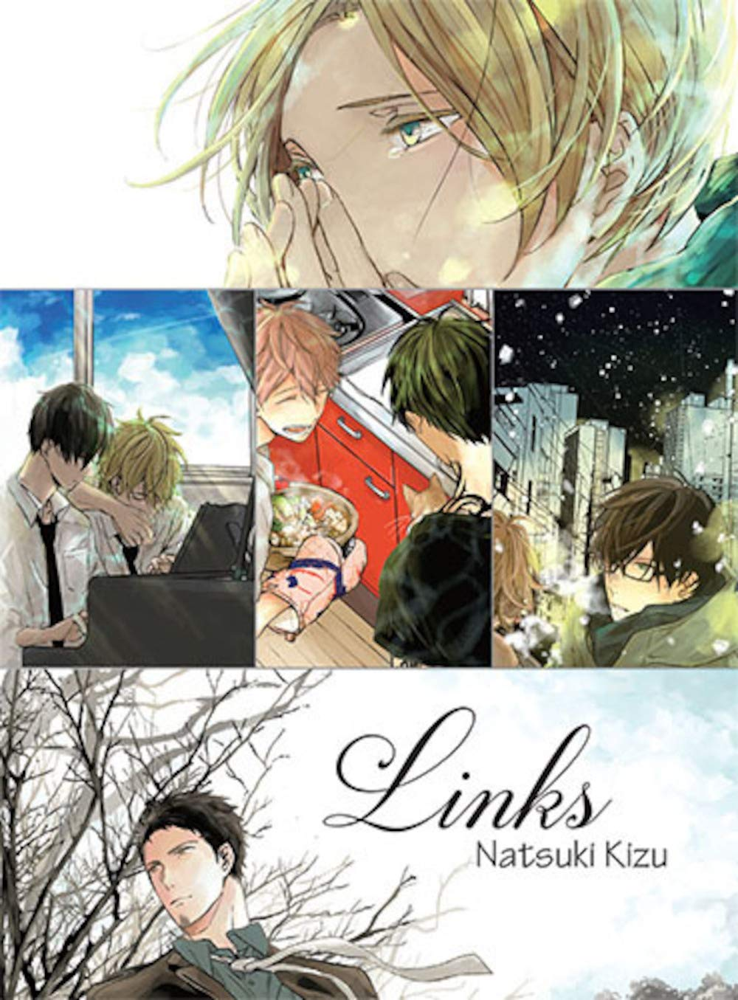

Informações gerais
- Ilustrado por: Natsuki Kizu
- Editoração: Shinshokan
- Impressão: Dear+ Comics
- Revistas: Chéri+
- Período de publicação: 30 de abril de 2013 – presente
- Volumes: 6
- Status: Ativo

Volume 01
Ritsuka Uenoyama é um guitarrista colegial com talentos de sobra, que por acaso conheceu Mafuyu Sato quando este o pede para trocar as cordas. Na mesma ocasião, Mafuyu pede para que Ritsuka o ensine a tocar guitarra, porém, o guitarrista não gostou muito da ideia. No entanto, ele se vê obrigado a mudar de opinião assim que ouve o canto estonteante de Mafuyu, a ponto de convidá-lo a fazer parte de sua banda.
- Editora : NewPOP; 1ª edição (29 maio 2020)
- Idioma : Português
- Capa comum : 200 páginas
- Dimensões : 18.2 x 13 x 1.2 cm

Volume 02
A banda começa a jornada para realizar o seu primeiro show. No entanto, Mafuyu, que aceitou compor a letra de uma das músicas, não estava conseguindo colocar em palavras o que gostaria de transmitir. Uenoyama, descobrindo sobre o passado de seu companheiro, também fica confuso com os próprios sentimentos. Acompanhe o show de estreia cheio de energia e que trará revelações do passado!
- Editora : NewPOP; 1ª edição (18 agosto 2020)
- Idioma : Português
- Capa comum : 180 páginas
- Dimensões : 18.2 x 13 x 1.2 cm

Volume 03
Dando-se conta da paixão que nutria por Mafuyu, Uenoyama acaba beijando-o nos bastidores do primeiro show da banda e agora estava se remoendo por dentro por ter feito o que fez. Ele sequer tinha se declarado, nem muito menos sabia como o próprio Mafuyu se sentia. E falando em amor, Haruki também nutre secretamente um sentimento pelo Akihiko... Como ficará esse novo capítulo da banda recém-formada?
- Editora : NewPOP; 1ª edição (3 novembro 2020)
- Idioma : Português
- Capa comum : 160 páginas
- Dimensões : 18.2 x 13 x 1.2 cm

Volume 04
Com foco em participar do festival, a banda se dedica na produção das músicas novas e Haruki se surpreende com o talento dos jovens Mafuyu e Uenoyama. Sentindo-se pressionado, o mais velho da banda acaba evitando os companheiros e aceita ajudar a banda da ex-namorada. Porém, Akihiko, por quem Haruki secretamente está apaixonado, percebe isso tudo e a paixão entre eles começa a soar cada vez mais forte.
- Editora : NewPOP; 1ª edição (18 dezembro 2020)
- Idioma : Português
- Capa comum : 160 páginas
- Dimensões : 18.2 x 13 x 1.2 cm

Volume 05
“Eu sabia que não ia prestar se eu ficasse do seu lado. Mesmo assim, eu gostava. Gostava muito. ...Você foi o meu primeiro amor.” O segundo dia de classificatórias valendo a participação no festival começou. Mafuyu ouviu os sentimentos de Ugetsu, percebeu que o amor de Haruki não deu certo e, vendo o Akihiko no meio dos dois, começa a compor a sua música. A nova canção do Mafuyu irá desembaraçar a complexa paixão de Akihiko, Haruki e Ugetsu.
- Editora : NewPOP; 1ª edição (30 abril 2021)
- Idioma : Português
- Capa comum : 208 páginas
- Dimensões : 18.2 x 13 x 1.2 cm

Volume 06
(Ainda não lançado) Às vezes, uma música pode salvar sua vida. O amor pela música une os quatro membros da banda Dado: o violento guitarrista Uenoyama, o baterista playboy Akihiko, o gentil baixista Haruki e Mafuyu, um cantor dotado de grande talento e sobrecarregado por tragédias do passado. Suas lutas e conflitos podem separá-los, mas seu vínculo com a música - e um com o outro - sempre os aproxima de novo.
- Editora : NewPOP; 1ª edição
- Idioma : Português
- Capa comum : 162 páginas
- Dimensões : 18.2 x 13 x 1.2 cm
Outras obras de Natsuki Kizu
Links
Sinopse: Sekiya, um locutor de rádio, e Shibata, que trabalha na cafeteria que ele costuma frequentar; Kameda e Ogikawa, que se encontram em uma noite fria e são acompanhados por um gato; Akiha, que não foi capaz de esquecer seu primeiro amor, e Yahiko, seu amante; e Nakajô e Sado, que estão juntos há muito tempo, mas estão sempre brigando. Esses quatro casais terão de lidar com seus sentimentos mais profundos se quiserem que seus relacionamentos não acabem.
